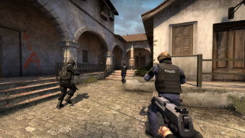
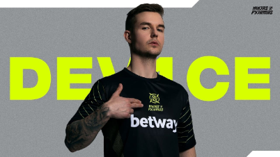

Classic Offensive
Classic Offensive - это модификация Counter-Strike: Global Offensive, созданная сообществом разработчиков. CO стремится вернуть Counter Strike к своим корням с полностью переделанными классическими картами, моделями персонажей и оружием, которые возвращаются к их исходным версиям, при этом сохраняя улучшения, внесенные CS:GO.

Ninjas In Pyjamas подписали в ростер Николая 'device' Ритца
NIP объявили о внезапном переходе device из Astralis. Четырехкратный победитель Major подписал трехлетний контракт со шведской организацией, заменив Тима «nawwk» Йонассона, которого выставили на трансфер.
ПЕРВОМАЙ
С Праздником Весны и Труда!🎉☭